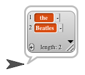
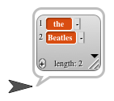

Look in the Variables palette below the orange variable-related blocks for a bunch of red blocks. These blocks are about lists. A list is a way to combine several values into one grouped value.
The first red block is the list block, used to create a list:
 Drag a list block into the scripting area to experiment with.
Drag a list block into the scripting area to experiment with.
This block uses a Snap! feature you haven't seen before: a variadic input. This means that, even though you see one input slot in the block, you can give it any number of inputs. The left and right arrowheads at the end of the block are used to delete or add input slots:

Like any reporter block, the list block can be dragged into an input slot of another block:
![SAY (LIST [the] [Beatles])](../../../../img/list/hof/saylist.png "SAY (LIST [the] [Beatles])") 

The grey rounded rectangle with red rounded rectangles inside it is the visual representation of a list. Each red rectangle is one list item.
The list picture has several extra widgets: a + button, the downarrow, and so on. When a list value is seen in a variable watcher, you can use these controls to modify the contents of the list directly. But we're not doing that for a while, so for now just focus on the values in the red rectangles.
Try these:
What value do you get if you call the list block with no inputs? (Use the left arrow to delete the original input slot.)
Can you drag other reporters into list input slots to compute the list items?
What happens if you drag a list block into an input slot that expects a number as input, such as the inputs to the arithmetic operators?